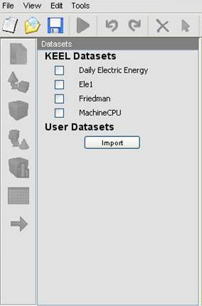
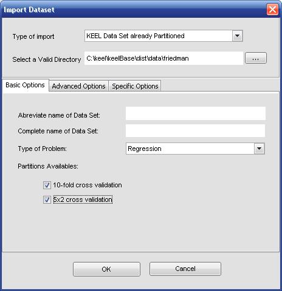
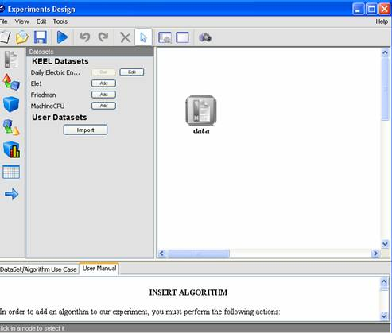
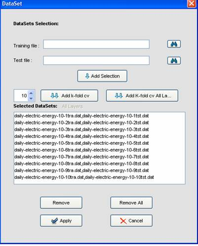
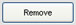

At this point, you can import an existing KEEL data set into your current KEEL Data sets selection. Just click in the
button. The next windows will appear:

Once you have selected your new data sets, they will appear under the default KEEL data set selection (in User Datasets section), and your previous data set selection will be kept.

Once again, you can import new data sets in this step, by clicking in button.

Initially, this dialog has the whole file. So, if you want to remove some of them, select it and then click the  button. Another way is to remove all the files by clicking the
 button, and then add the files you want. To do that, you must look for the training and test file by clicking the
button, and then add the files you want. To do that, you must look for the training and test file by clicking the  button and, after that, click the
button and, after that, click the  button.
button.